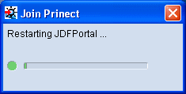
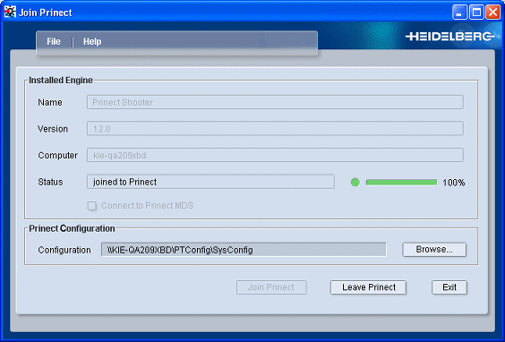

Note: If you mounted Prinect Shooter at a Prinect system and afterwards wish to update the Prinect Shooter software, you must unmount Prinect Shooter from the Prinect system before you start the update as described below. After the update or re-installation, you can mount Prinect Shooter again at the Prinect system.
Note: If you mounted Prinect Shooter at a Prinect system and afterwards wish to update the Prinect Shooter software, you must unmount Prinect Shooter from the Prinect system before you start the update as described below. After the update or re-installation, you can mount Prinect Shooter again at the Prinect system.
 Prerequisite: Before you connect Prinect Shooter to the Prinect system, you must first make sure that the Prinect Shooter service is active. To do this, call up the "Prinect Shooter Service Control" application from the Prinect Shooter start menu, if necessary, click the "Start" button and wait until the Prinect Shooter service has started.
Prerequisite: Before you connect Prinect Shooter to the Prinect system, you must first make sure that the Prinect Shooter service is active. To do this, call up the "Prinect Shooter Service Control" application from the Prinect Shooter start menu, if necessary, click the "Start" button and wait until the Prinect Shooter service has started.
Make sure that all instances of the Prinect Integration Manager "Cockpit" are exited because Prinect Shooter can only be used after a complete Integration Manager cockpit user interface restart.
You need a special configuration application to connect Prinect Shooter to the Prinect system: "Join Prinect" that is easy to start from the Prinect Shooter user interface.
Note: To connect Prinect Shooter to the Prinect system, the Prinect Shooter service must be set up with a user account that has the necessary permissions on the Prinect Integration Manager PC. This requirement is met if you installed Prinect Shooter and the Prinect Integration Manager with the same user account (e.g. "prinect") as recommended in the installation manuals. You can find details about the Prinect Shooter service in the "Prinect Shooter - Installation" manual.
Windows assumes that it could be a malware, e.g. a Trojan, and would like to block communication from "Join Prinect" by Windows Firewall. Click "Unblock". The "JoinPrinect" dialog opens.
5. We recommend that you enable the "Connect to Prinect MDS" option if there is a "Master Data Store" (MDS) on the Prinect Integration Manager server. In this case, the MDS of the Prinect Integration Manager server is responsible for management of the master data.
6. Click the "Join Prinect" button. An alert message appears. Make sure that all Integration Manager Cockpits are closed and that no other applications are working with the Integration Manager configuration files. Confirm the dialog with "OK".
A progress bar shows the connection status. At the same time additional status information is shown in a small window:

7. When the connection is established, the status display shows "100%" and the "Joined to Prinect" message appears.

Prinect Shooter is now linked to the Prinect system. Close the "Join Prinect" dialog by clicking "Exit". Now you can start the Prinect Integration Manager Cockpit.
Copyright © 2013 Heidelberger Druckmaschinen AG